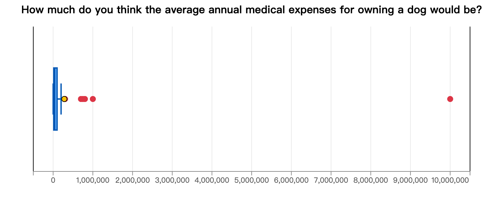
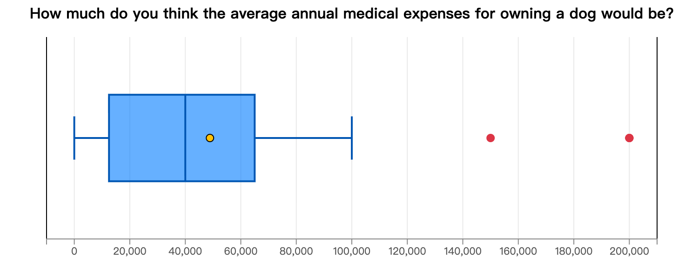

Research Analysis
Description of Basic Sample Information
In terms of demographic data, a total of 60 valid questionnaires were collected in this study. Regarding gender distribution (Figure 1), there were 29 male and 29 female respondents (48.3% each), with the remaining 2 (3.3%) identified as “other” or preferred not to disclose. The age distribution was relatively even (Figure 2), with the 18–24 years (n = 11, 18.3%), 35–44 years (n = 11, 18.3%), 25–34 years (n = 10, 16.7%), under 18 years (n = 9, 15.0%), 45–54 years (n = 9, 15.0%), 55–64 years (n = 9, 15.0%), and over 65 years (n = 1, 1.7%).
This is how we did the survey and how we did was first we found a person to talk to and then
Regarding dog ownership experience asked in Question 1 (Figure 3), the largest group of respondents had never owned a dog (22 respondents, 36.7%). This was followed by those who currently own a dog and those who had owned one in the past, with each group consisting of 19 respondents (31.7% each). This indicates that nearly one-third of the respondents living in the Da’an District are currently dog owners. This relatively moderate ownership rate suggests that while pet companionship is popular in this urban area, a significant portion of the local population still has no experience or current involvement with dog ownership.
Analysis of Medical Cost Perception
A statistical analysis was conducted on respondents’ perceptions of the average annual medical expenses for dogs. Preliminary analysis (Figure 4) showed that the perceived mean for the entire sample was as high as NT$281,456, with a standard deviation of NT$1,326,366. However, the presence of extreme outliers in the data (with the highest value reaching NT$10 million) severely skewed the overall average upward.

To ensure accuracy, this study recalculates the data after removing outliers by using the 1.5 IQR (interquartile range) method. The results (Figure 5) indicate that the revised mean perceived medical expense decreased to NT$48,882, with the standard deviation narrowing to NT$50,772. This finding reflects a significant disparity in the general public’s perception of medical costs, suggesting that some individuals may overestimate rearing costs due to extreme medical cases.

Analysis of factors hindering adoption
According to the multiple-choice statistical results (n=60), the primary reason influencing the public’s willingness to adopt dogs exhibit a highly concentrated distribution. The analysis indicates that “Space” and “Financial Burden” represent the two most critical considerations, with each selected by 30 respondents (50.0%) respectively.
Secondly, external regulations and physiological limitations also represent a large proportion of the obstacles. “Rental Accommodation or Environment” were cited by 25 respondents (41.7%), reflecting the unfriendliness of the rental market and community guidelines toward pet ownership. Meanwhile, “Allergies” were selected by 19 respondents (31.7%), demonstrating that physiological allergic reactions remain a barrier that cannot be overlooked.
In terms of time and energy allocation, 18 respondents (30.0%) identified “Time Factors” as a challenge, suggesting that approximately 30% of the respondents are concerned that their daily work or lifestyle routines may lack sufficient time to companion their pets. Relatively speaking, “Dislike of Dogs” and “Physical Stamina” were each selected by only 6 respondents (10.0% each), while “Other” accounted for 3.3% (2 respondents).
Analysis of Pet Abnormal Coping Behaviors
Regarding the reaction when dogs exhibit physiological abnormalities (such as loss of appetite and vomiting), the survey results show differences in the response logic among respondents (Figure 6). Data suggest that 48.33% of respondents chose to “immediately take the dog to the vet for examination.”
Meanwhile, over 40% of the respondents inclined toward initial evaluation or information gathering; 23.33% chose to “observe the situation before making a decision flocks,” while 18.33% preferred to 'search for information online' first. Additionally, 10% of the respondents stated that their coping behavior “depends on financial status.”
The data indicates that approximately half of respondents would seek immediate veterinary care upon noticing unusual behavior in their dogs. This high frequency of medical consultations increases the overall financial burden of pet ownership.
Analysis of the impact of reduced medical costs on adoption willingness
This study further explores the potential impact of reducing medical expenses on the public’s willingness to adopt dogs. The findings indicate a significant increase in adoption willingness as medical costs decrease. Among the 60 respondents, more than half (53.3%) reported that their willingness would increase, with 28.3% indicating a “largely increase (5)” and 25.0% indicating a “slight increase (4).” This demonstrates that for more than half of the public, the economic threshold of medical costs is a critical factor influencing their adoption decisions.
Conversely, approximately 43.3% of the respondents stated that their willingness would be “unaffected (3).” This reflects that for this part of the population, adoption decisions are not guided by economic considerations, which may depend more heavily on external constraints such as living environment limitations, time and energy commitment, or allergies. Only 3.3% of the respondents indicated that their willingness would “decrease (1 or 2).”
The data trends suggest that optimizing and reducing medical expenses can effectively lower the barriers to adoption, thereby offering a significantly positive contribution to encouraging actual adoption actions among potential owners.
Association Between Gender and Dog Ownership Status
To investigate whether demographic characteristics correlate with dog ownership experience, we performed a Chi-square test of independence. To meet minimum expected cell frequencies, respondents who identified with gender categories answered insufficient sample sizes (n = 2) were excluded from the analysis , resulting in an analytical sample of n = 58. The analysis cross-referenced gender against the respondents’ dog ownership status, which was categorized into three groups: current owners, past owners, and those who have never owned a dog.
To examine the distribution of dog ownership experience across genders, a two-way table with a chi-square test was performed. The analysis showed a non-significant result with a p-value of 0.569 (p > 0.05). Therefore, we fail to reject the null hypothesis, indicating that a respondent’s gender is independent of their dog ownership habits and experiences within this sample. This finding indicates that gender.
| Gender | Never Owned | Currently Own | Owned in the Past | Grand Total |
|---|---|---|---|---|
| Male (男) | 11 Exp: 11.00 | 7 Exp: 9.50 | 11 Exp: 9.50 | 29 |
| Female (女) | 11 Exp: 11.00 | 10 Exp: 9.50 | 8 Exp: 9.50 | 29 |
| Grand Total | 22 | 19 | 19 | 58 |
Impact of Ownership Experience on Cost Perception
To further explore variations in the perception of dog medical expenses, respondents were categorized based on their dog ownership experience. After removing outliers using the 1.5 IQR method, the statistical analysis revealed a distinct gap between the two groups. Specifically, respondents with dog ownership experience estimated the average annual medical cost to be NT$42,750, whereas respondents without dog ownership experience projected a higher average of NT$51,389.
This comparison shows that individuals who have never owned a dog overestimate annual medical expenses by about NT$8,639 compared to those with firsthand experience. This phenomenon suggests that non-owners often overestimate rearing costs because they are influenced by extreme cases in the media and anxious about unknown medical expenses.
This aligns with our finding that ‘Financial Burden’ is a main barrier to dog adoption (50.0%). It means that many potential adopters are discouraged by inflated veterinary costs. Therefore, improving billing transparency or promoting pet insurance could alleviate this anxiety and lower the barrier to adoption.
Conclusion
This study examines people’s dog ownership experience, perceptions of dog medical expenses, factors that affect dog adoption, and how lower medical costs may influence adoption willingness. A total of 60 valid responses were collected from participants of different ages and genders.
The results supported our predictions. First, the largest group of respondents had never owned a dog, confirming our expectation for Question 1. Second, respondents estimated the average annual medical cost of owning a dog to be about NT$48,882 after removing outliers, which was higher than our prediction of NT$28,000. Third, financial burden was one of the most important barriers to dog adoption, although space limitations were equally important, with both factors selected by 50% of respondents.
Additionally, the study explored how demographic factors relate to dog ownership. A Chi-square test of independence was conducted to examine the association between gender and dog ownership status (analytical sample of n = 58). The analysis revealed a non-significant result (p = 0.569), indicating that a respondent’s gender is independent of their dog ownership habits and experiences within this sample.
Additionally, the study looked at how having a dog affects people’s ideas about medical costs. The data showed a clear difference between the two groups: people who never owned a dog expected a higher annual cost (NT$51,389) than those with experience (NT$42,750). This gap of about NT$8,639 suggests that non-owners often overestimate the costs, probably because of extreme stories in the media or worry about unknown vet bills. This matches our finding that ‘Financial Burden’ is a main reason stopping people from adopting, showing that many potential owners are scared away by exaggerated costs.
For Question 4, our prediction was also supported. Nearly half of the respondents (48.3%) said they would take their dog to a veterinarian immediately when noticing unusual behavior. This suggests that many people recognize the importance of professional medical care, but it also increases the financial responsibility of owning a dog.
Finally, the results showed that lower medical costs could increase adoption willingness. More than half of the respondents reported that they would be more willing to adopt a dog if medical expenses were reduced. This finding highlights the important role that veterinary costs play in adoption decisions.
Overall, the study suggests that financial burden, living space, and medical expenses are major factors influencing dog adoption. Reducing veterinary costs and creating more pet-friendly living environments may encourage more people to adopt dogs and provide loving homes for animals in need., the next step after this research is to convince people to buy animal insurance and we also need to know what companies had made insurance so we can know more on why those companies quit animal insurance